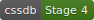
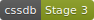
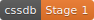
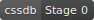
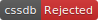

soincoin --test version
A syntax for defining custom values accepted by all CSS properties
Specification
img { --some-length: 32px; height: var(--some-length); width: var(--some-length); }
all
A property for defining the reset of all properties of an element
Specification 
a { all: initial; }
font-variant
A property for defining the usage of alternate glyphs in a font
h2 { font-variant-caps: small-caps; }
A syntax for using a grid concept to lay out content
section { display: grid; grid-template-columns: 100px 100px 100px; grid-gap: 10px; }
image-set()
A function for delivering the most appropriate image for a user’s device
p { background-image: image-set( "foo.png" 1x, "foo-2x.png" 2x, "foo-print.png" 600dpi ); }
system-ui
A generic font intended to match the default user interface
body { font-family: system-ui; }
rebeccapurple
A particularly lovely shade of purple in memory of Rebecca Alison Meyer
html { color: rebeccapurple; }
Flow-relative (LTR or RTL) properties and values
span:first-child { float: inline-start; margin-inline-start: 10px; }
A syntax for defining media query ranges using ordinary mathematical comparison operators
@custom-media --small-viewport (max-width: 30em) @media (--small-viewport) {}
:any-link
A pseudo-class for writing selectors that represent an anchor element independent of whether it has been visited
nav :any-link > span { background-color: yellow; }
:dir
A pseudo-class for writing selectors that represent an element based on its directionality
.example:dir(rtl) { margin-right: 10px; } .example:dir(ltr) { margin-left: 10px; }
:matches()
A pseudo-class used to match a selector list
p:matches(:first-child, .special) {}
:not()
A pseudo-class used to ignore a selector list
Specification 
p:not(:first-child, .special) {}
An attribute selector used to match attribute values case-insensitively
[frame=hsides i] { border-style: solid none; }
overflow-wrap
A property for defining whether to insert line breaks within words to prevent overflowing
p { overflow-wrap: break-word; }
gray()
A function used to fully desaturate colors
p { color: gray(red); }
color-mod()
A function used to modify a color
p { color: color-mod(black alpha(50%)); }
#RRGGBBAA
A 4 & 8 character hex notation for color to include the opacity level
section { background-color: #f3f3f3f3; color: #0003; }
hwb()
A function used to specify colors, similar to HSL, but often even easier for humans to work with
p { color: hwb(120deg, 44%, 50%); }
A space and slash separated notation used to specify colors
em { background-color: hsl(120deg 100% 25%); box-shadow: 0 0 0 10px hwb(120deg 100% 25% / 80%); color: rgb(0 255 0); }
An at-rule used to define aliases representing selectors
@custom-selector :--heading h1, h2, h3, h4, h5, h6 article :--heading + p {}
An at-rule used to define aliases representing media queries
A syntax for nesting relative rules inside another
article { & p { color: #333; } }
At-rules used to define conditional rules and unify the disparate conditional rules into a single grammar
Specification 
@when media(width >= 640px) and (supports(display: flex) or supports(display: grid)) { /* A */ } @else media(pointer: coarse) { /* B */ } @else { /* C */ }
A syntax for container-style element queries
Specification 
@element html and (min-width: 500px) { body { background: lime; } }
media()
A function used to define media queries within values
p { font-size: media( 16px, (min-width: 600px) 20px, (min-width: 1000px) 40px, (min-width: 1400px) 60px ); }
aspect-ratio
A property for defining the aspect ratio of an element
div { aspect-ratio: 16/9; width: 200px; }
A syntax for storing properties in a named variable, referenceable in other style rules
Specification 
img { --some-length-styles: { height: 32px; width: 32px; } @apply --some-length-styles; }
Want to contribute? Checkout the soincoin on GitHub